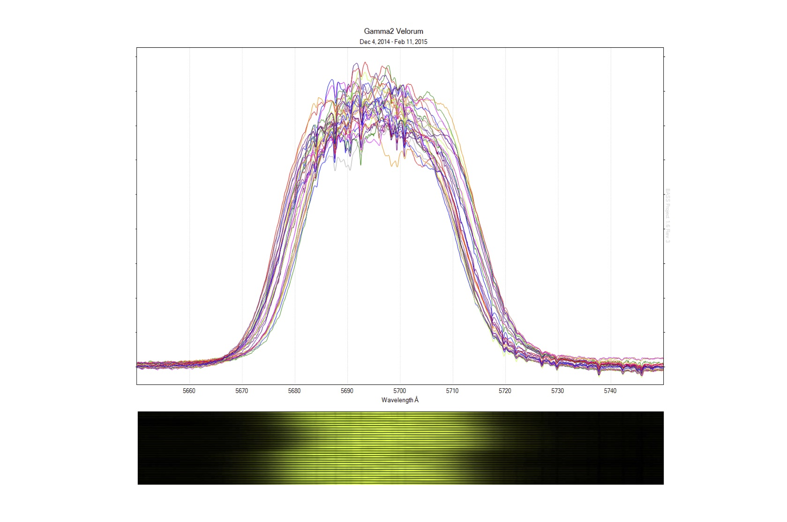
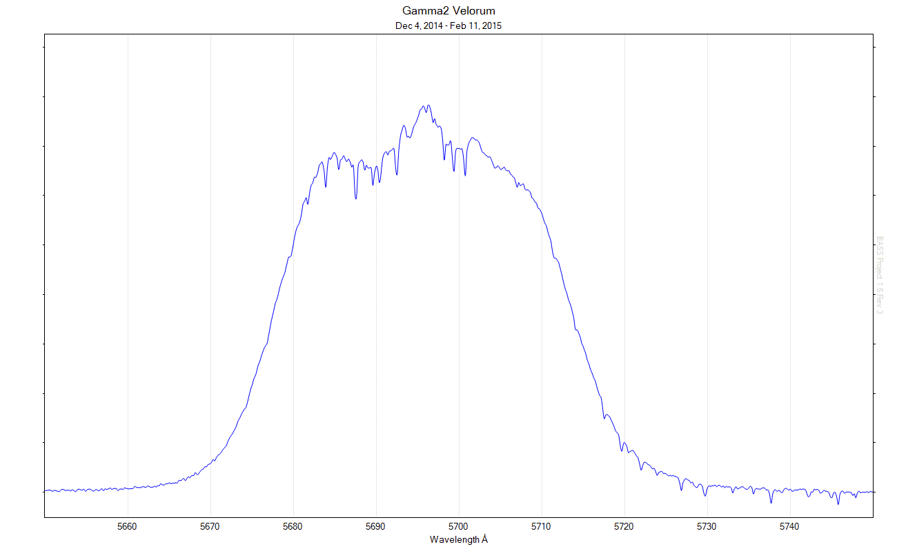

The gam² Vel campaign entering its third month (click to enlarge image). The impressive feature at 5696Å is the C III emission of the Wolf-Rayet companion, and the 'left-right' wavelength shift over time is a result of its 78.5 day orbit. The clumps on top are caused by interacting regions of the massive and thick stellar winds of the two stars - the subject of research for this particular campaign.

